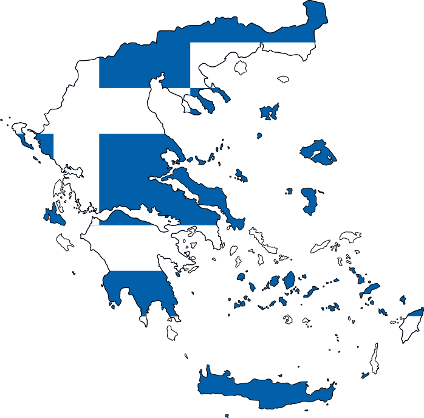

Впервые термин «анекдот» появился еще в Древней Греции и означал он что-то неизданное,
что не должно предаться всеобщей огласке. В то время анекдотами считались различные сплетни и слухи.
Позже этим термином стали называть истории из жизни известных людей, их забавные поступки,
смешные ситуации в которые они попадали и прочее. Спустя время анекдотами считались
юмористические остросюжетные миниатюры с необычной развязкой. Их героями становились древние правители,
знаменитые поэты и писатели, завоеватели, пророки, художники и другие личности,
скрывавшиеся под маской глупца. В привычном для нас виде анекдоты появились только в прошлом веке,
так как именно тогда они получили развитие как фольклорное творчество.
Впервые термин «анекдот» появился еще в Древней Греции и означал он что-то неизданное,
что не должно предаться всеобщей огласке. В то время анекдотами считались различные сплетни и слухи.
Позже этим термином стали называть истории из жизни известных людей, их забавные поступки,
смешные ситуации в которые они попадали и прочее. Спустя время анекдотами считались
юмористические остросюжетные миниатюры с необычной развязкой. Их героями становились древние правители,
знаменитые поэты и писатели, завоеватели, пророки, художники и другие личности,
скрывавшиеся под маской глупца. В привычном для нас виде анекдоты появились только в прошлом веке,
так как именно тогда они получили развитие как фольклорное творчество. Хотя бы раз каждый из нас задумывался, а кто же придумывает анекдоты? Ответ на этот вопрос лежит на поверхности. Автор этих забавных историй — народ. Стремительно развиваться этот жанр народного творчества начал после революции. Связано это с тем, что многие деревенские жители стали покидать свои села и переселяться в города. И если раньше от политической жизни страны они были достаточно далеки, то сейчас чувствовали себя ее непосредственными участниками. Поэтому первые русские анекдоты были именно на политическую тематику. Стоит отметить, что в 30-е годы прошлого века такие анекдоты находились под запретом, и за их сочинение или пересказ была предусмотрена уголовная ответственность. Из-за чего в этот период эти юмористические истории практически не записывались, но это не значит, что и не сочинялись.